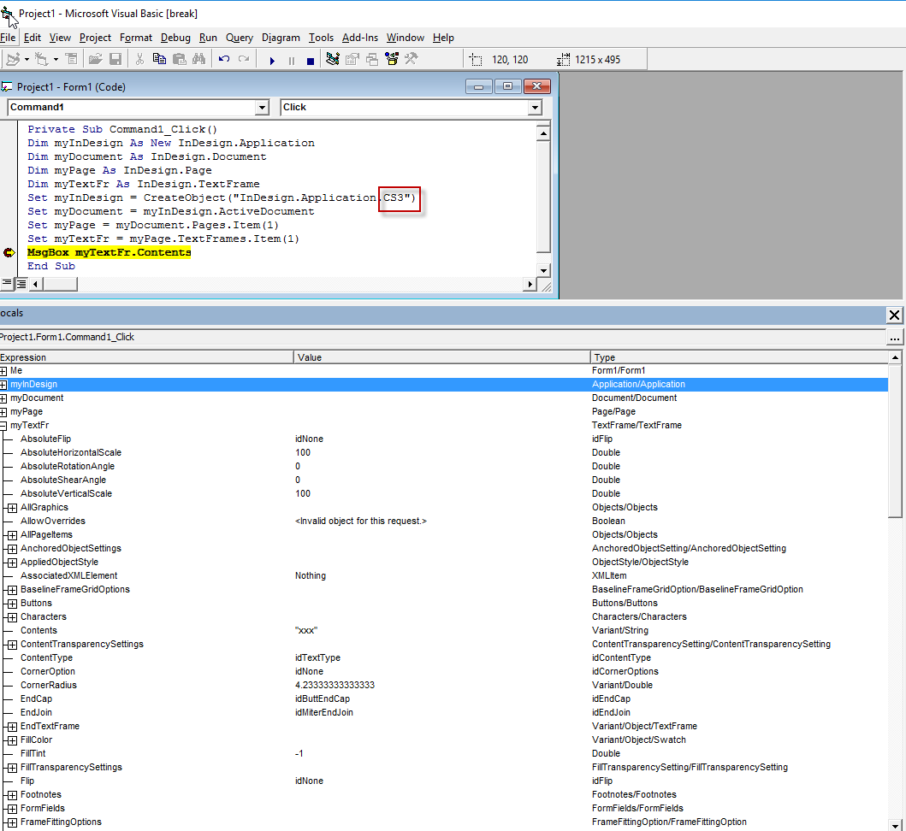
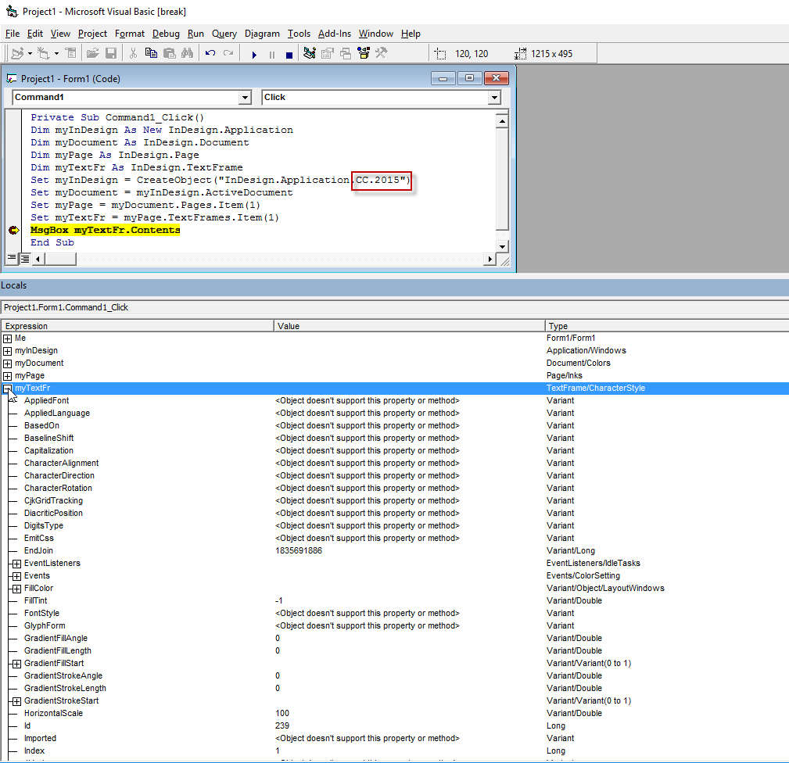

In recent InDesign versions things with Visual Basic are totally broken
I noticed it only in CC 2015 back in August 2016.
I used Visual Basic 6 when I was making my baby steps in scripting back in 2004. Now I'm a devotee of JavaScript and use VB or AS only when I can't do without them. For example, when a client wants the script to export a pdf-file from InDesign and send it by e-mail. I write the main part in JS and the "send e-mail" part, say, in AS (if the client is on Mac). Then combine them with "do script" method. By the way, different scripting languages work very well together if you do everything correctly, of course. So, I am not an expert in VB but I think that Adobe simply stopped supporting VB because it's not popular among scripters and with newer versions of InDesign it doesn't work properly.
And here's a confirmation to my guess: I tested the same script both in the latest thenadays InDesign 2015.4 and outdated InDesign CS3.
In CS3 — everything is OK.

And exactly the same code in CC 2015 — everything is broken

As to me, if I ever need to write a VB script for InDesign, I'd rather get my old and covered with dust PC — with Windows XP and CS3 installed — from the lumber-room for this purpose.